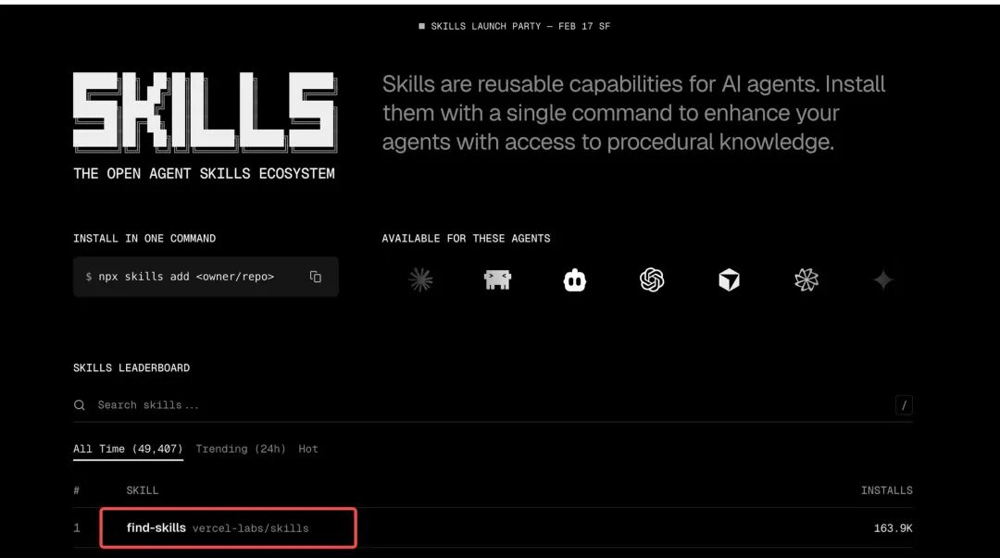
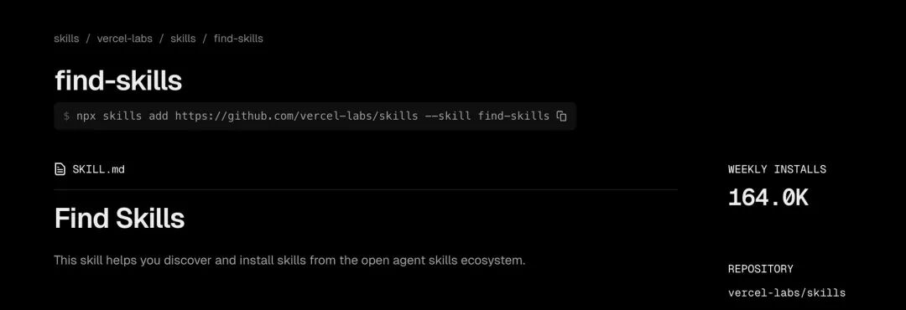
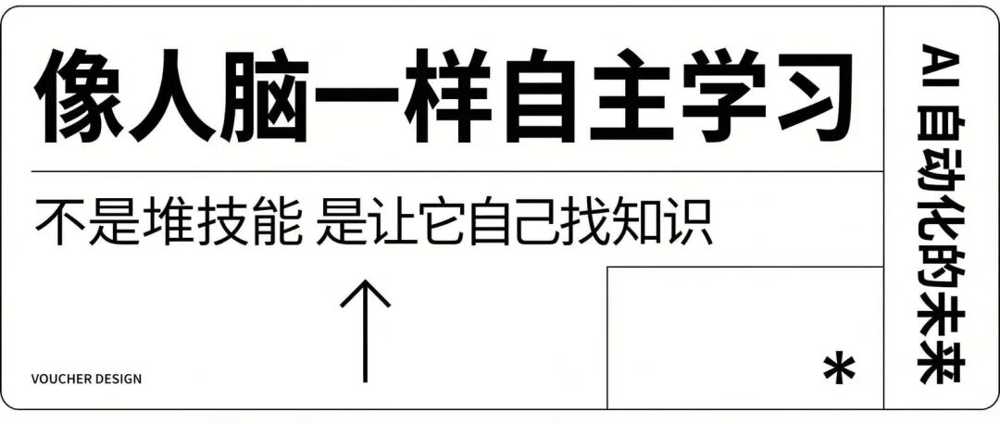
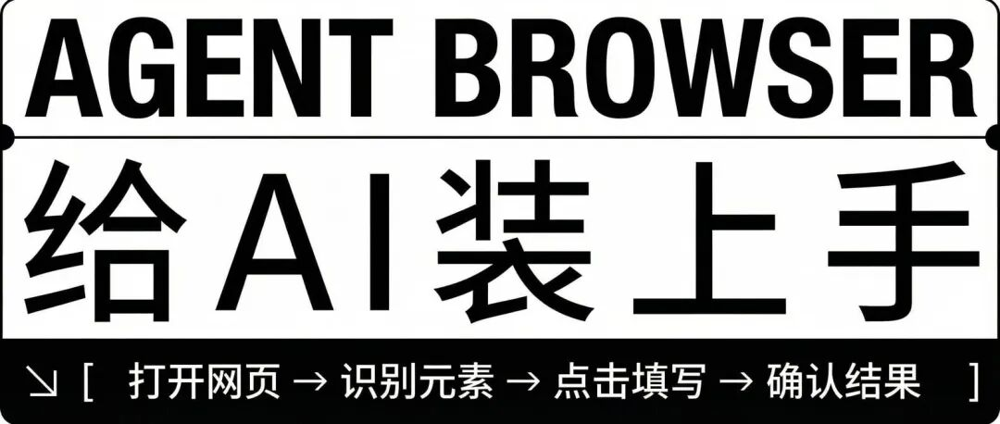
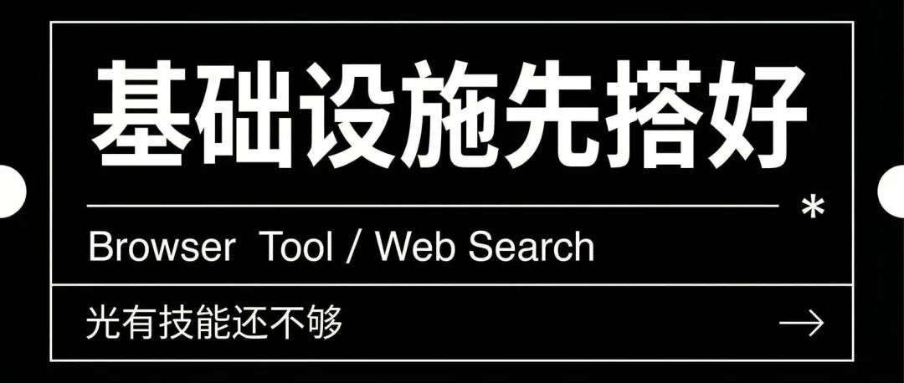
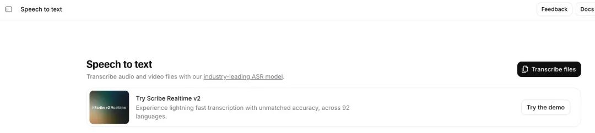
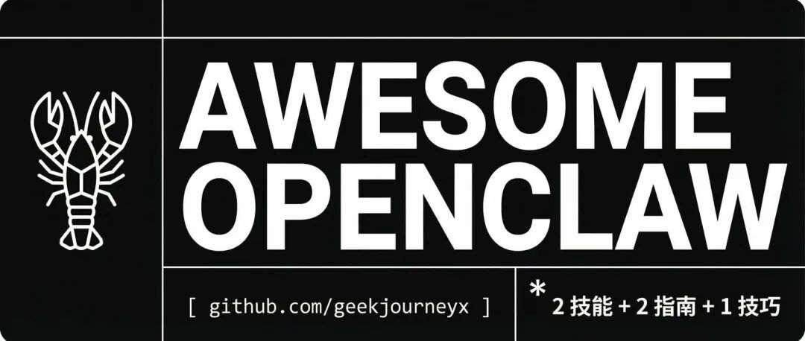

大家好，我是极客杰尼。
上一篇聊了怎么给 OpenClaw 装上任务系统，让它像人一样自己领任务干活。不少朋友看完私信问我：具体装了哪些技能？有没有现成的资源可以直接用？
今天就整理一份实战合集。两个技能、两篇指南、一个小技巧，都是我自己在用的，拿来即用。
第二个技能：让 AI 自己学会找技能
Find Skills 这是我最想推荐的一个。

很多人的思路是：我要给 AI 装很多技能，一个一个手动加。我觉得这条路走不远。技能越来越多，你根本管不过来。
换个思路：不要喂它技能，让它自己去找。
Find Skills 就是干这个的。它相当于一个“技能搜索引擎”，AI 助理遇到不会的事情，自己去搜、自己去装、自己去学。

就像人学东西一样。你不需要把所有知识塞进脑子里，你只需要学会怎么找知识、怎么学知识。
我觉得这才是未来 AI 自动化的方向，不是堆技能，是让它像人脑一样自主学习。
安装很简单：
装完之后，你的 AI 助理就有了“自学能力”。

第二个技能：Agent Browser
有了搜索和学习能力还不够，很多任务需要操作网页。填表单、抓数据、截图、登录后台……这些事情，Agent Browser 都能干。
它的逻辑很清晰：打开网页 → 识别元素 → 点击、填写、选择 → 确认结果。
跟人操作浏览器的流程一样，只不过是 AI 在替你干，简单的流程还是比较稳的，注意就是费 Token。
安装命令：
装完之后，你的 AI 助理就有了“手”，能直接操作浏览器了。

两篇实战指南
光有技能还不够，有些基础设施得先搭好。我写了两篇指南，都放在 GitHub 仓库里了。
1. Browser Tool 安装指南
手把手教你怎么在 Linux/Ubuntu 环境下把浏览器工具配置好。包括 Chrome 安装、配置文件隔离、多配置管理等。搞定这一步，Agent Browser 才能真正跑起来。
2. Web Search 联网搜索指南
让你的 AI 助理能联网搜索。我对比了几个第三方服务，最终推荐 Brave Search。原因很简单：免费额度够用，响应速度快，配置也不复杂。
如果你希望 AI 助理不只是在本地知识库里找答案，而是能像你一样上网搜信息，这篇指南值得跟着走一遍。

一个小技巧：语音识别
如果你想让 AI 助理能听懂语音，可以接入 ElevenLabs 的语音转文字服务，识别效果还不错。
配置方式特别简单：直接跟你的 AI 助理说“帮我安装ElevenLabs Speech-to-Text 技能，我需要接入 ElevenLabs 语音识别”，然后把 API Key 发给它，它就自动帮你配好了。
不过要提醒一下：这个服务是有费用的，有免费额度但不多。日常场景下，其实在聊天工具里用自带的语音转文字就够了。但如果你有批量转写音频、会议记录这类需求，可以体验一下。

资源汇总
以上所有资源都整理在我的 GitHub 仓库里，需要的自取：
👉 github.com/geekjourneyx/awesome-openclaw
两个技能、两篇指南、一个小技巧。不多，但都是我自己跑通验证过的。
工具不在多，关键是每一个都能真正用起来。

最后
如果你也在玩 OpenClaw，或者对 AI 自动化感兴趣，可以后台私信聊聊，开放一对一咨询服务。
我自己跑通了从环境搭建到实际落地的整个流程，踩过不少坑，也许能帮你省点时间。
工具不在多，关键是每一个都能真正用起来。
另外，我计划组建了一个 龙虾实战交流群，限 99 元/人。
门槛只有一个：你已经成功安装了 OpenClaw。
群里会持续更新我验证过的 Skills 资源、最新资讯、各种实战玩法。不是入门群，是给真正在用的玩家准备的。
付费入群，筛选同频的人。感兴趣的后台私信我「龙虾」。
Skills 实战系列
这是 Skills 实战系列的第六篇。
如果你还没看过前面的，可以回顾一下：
后面还会有更多实战案例，敬请期待。
以上。
既然看到这里了，如果觉得有用，随手点个「赞」「在看」「转发」三连吧。
想第一时间收到推送，可以给我加个星标 ⭐
我会持续分享 AI 工具和实战案例，对新手友好。
有问题随时后台私信，咱们一起交流。